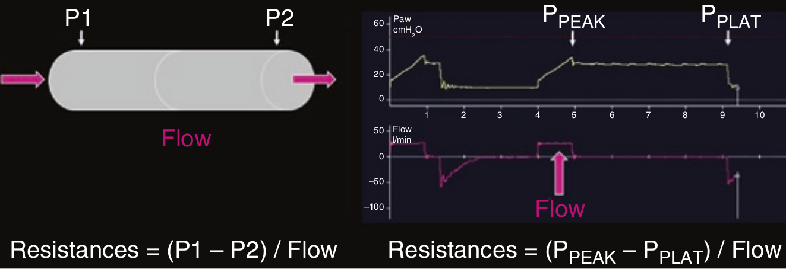

مقاومت عبارت است از نسبت فشار رانش تولید کننده شدت جریان (فشار ترانس ایروی) به شدت جریان تولید شده.
در حالت تنفس پاسیو (تنفس اجباری) در مدهای حجمی با الگوی شدت جریان مربع مقاومت راه هوائی (شامل مقاومت لوله تراشه) را می توان با فرمول زیر بدست آورد:
RAW = (PPEAK - PPLAT) / Flow

مقاومت دمی به کدام بستگی دارد:
۱ - شدت جریان دمی
۲ - قطر لوله تراشه
۳ - چگالی گاز دمی
۴ - استفاده از مرطوب کننده و گرم کننده
۵ - تمام موارد فوق